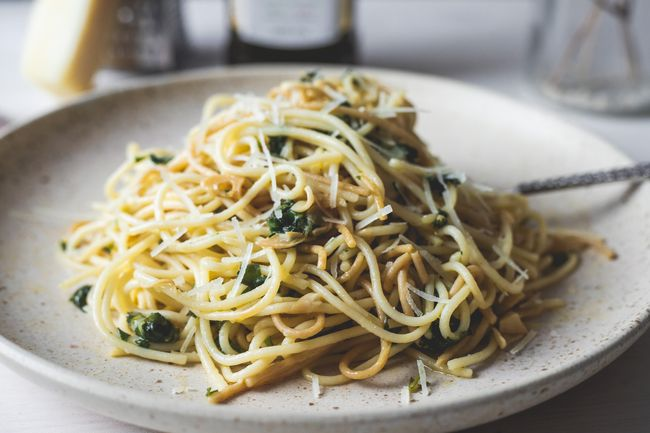

Spaghetti Aglio e Olio

Description
No two aglio e olio recipes are alike, but this one is pretty true to the classic method. The key is slowly toasting the garlic slices to a perfect golden brown in the olive oil. If it's too light, you don't get the full flavor and if it's too dark it gets bitter. My advice? Do it perfectly.
Ingredients
- Spaghetti
- 1/2 cup of olive oil
- Six cloves of thinly sliced garlic
- Seasonings: crushed red pepper flakes, black pepper, and fresh parsley.
Steps
- Boil the spaghetti.
- Toast the garlic in olive oil.
- Stir the seasonings into the pasta, then stir in the garlic and oil.